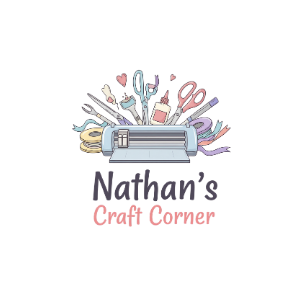

The corner where craft meets heart
Nathan's Craft Corner started with a Cricut, a kitchen table, and a lot of curiosity. What began as making small gifts for family turned into a full craft corner — one built around a simple idea: gifts feel better when they're made just for you.
Today, every calendar, decal, souvenir, card, and shadow box that leaves the workshop is designed and cut by hand, piece by piece, for the person it's meant for. No two orders are ever quite the same — because no two stories are either.
- Made to order, never mass produced
- Personalized down to the smallest detail
- Cut with precision, packed with care

From idea to keepsake
1. You share your idea
Message us your occasion, colors, names, or photos — whatever makes it yours.
2. We design & confirm
We put together a design based on your details and confirm it with you before cutting.
3. We cut & assemble
Each piece is cut, layered, and assembled by hand in the workshop.
4. It's ready for you
Your finished piece is packed with care and ready for pickup, delivery, or download.